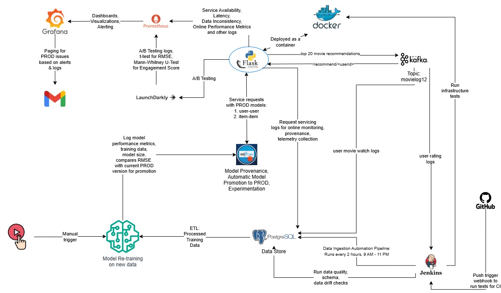

Project Overview
A robust and production-ready movie recommendation engine integrating collaborative filtering with an MLOps pipeline. The system supports continuous deployment, online evaluation, real-time telemetry, and fairness monitoring using modern tooling.
✨Achieved <0.4s average latency, 2.34 RMSE (online), and >90% request success rate
✨Enabled automated retraining via MLflow with schema validation, drift detection, and CI triggers
✨Integrated A/B testing with LaunchDarkly for user-level model experimentation
✨Monitored service uptime and accuracy via Prometheus + Grafana with alerting and version tagging
✨Built fault-tolerant Kafka pipelines with PostgreSQL for ingestion, tracking, and evaluation
Project Description

1. Architecture & Inference Pipeline
- User-item collaborative filtering using cosine similarity
- Dockerized Flask API downloads model artifacts from MLflow at runtime
- Real-time Kafka consumers feed data into a PostgreSQL backend
- Jenkins pipelines auto-trigger ingestion, schema validation, retraining, and promotion
- Prometheus scrapes metrics for latency, availability, and fairness
- LaunchDarkly assigns users to A/B test variants (user-user vs. item-item models)
2. Evaluation & Impact
- Offline RMSE: 2.09 (test set); Online RMSE: 2.34
- Inference latency: <0.4 seconds
- Request success rate: >90% (Prometheus-tracked)
- Memory footprint: ~87MB (user-user model)
- Monitored schema violations, drift, and real-time traffic distribution
- A/B testing showed statistically significant improvements in engagement (p < 0.0001)
3. Observability & Monitoring
- Kafka logs pushed to PostgreSQL for watch/rating/recommendation logs
- Exposed metrics via
/metricsendpoints for Prometheus
- Visualized service uptime, schema violations, latency trends via Grafana
- Tracked online engagement and fairness using watch completion and group disparity metrics
- Alerting integrated (Grafana → SMTP) to notify system failures
4. Fairness, Feedback Loops & Security
- Evaluated engagement disparity across age and gender groups
- Implemented fairness alerting (disparity ratio < 0.8) and proposed balancing fallback models
- Detected and mitigated feedback loops (popularity/self-confirmation) using telemetry analysis
- Threat model included poisoning attacks and model extraction via APIs
- Data poisoning detection used chi-squared tests; mitigation via schema validators + manual audits
5. Continuous Integration & Retraining
- Jenkins pipelines retrain and promote models using MLflow tracking
- Scheduled ingestion every 2 hours from Kafka to PostgreSQL
- Retraining evaluated RMSE improvements and used force-promote override flag
- Schema and data quality tests run via Pytest before retraining
- Canary deploys tested via LaunchDarkly flags for rollback safety
Tools & Frameworks
| Area | Tools / Stack Used |
|---|---|
| Model Training | scikit-learn, pandas, joblib, numpy |
| Data Ingestion & Storage | Kafka, PostgreSQL, tmux, SQLAlchemy |
| Inference & Serving | Flask, gunicorn, MLflow, Docker, NGINX |
| CI/CD | Jenkins, GitHub Actions, pytest, Docker Hub, cron |
| Monitoring & Telemetry | Prometheus, Grafana |
| Experimentation | LaunchDarkly, pandas, scipy.stats, Prometheus Python Client |
| Security & Validation | Pytest, psycopg2, pydantic |